集合啦！動物森友會 - 地毯圖庫全輯
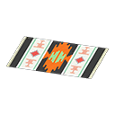
黑色圖案廚房地墊
くろいパターンキッチンマット
Black-design kitchen mat
佔地尺寸：2.0 × 1.0（小型 (S)）
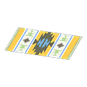
黃色圖案廚房地墊
きいろパターンキッチンマット
Yellow-design kitchen mat
佔地尺寸：2.0 × 1.0（小型 (S)）
紅色圖案廚房地墊
あかいパターンキッチンマット
Red-design kitchen mat
佔地尺寸：2.0 × 1.0（小型 (S)）
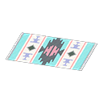
藍色圖案廚房地墊
あおいパターンキッチンマット
Blue-design kitchen mat
佔地尺寸：2.0 × 1.0（小型 (S)）
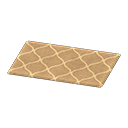
茶色廚房地墊
ちゃいろいキッチンマット
Brown kitchen mat
佔地尺寸：2.0 × 1.0（小型 (S)）
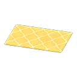
黃色廚房地墊
きいろいキッチンマット
Yellow kitchen mat
佔地尺寸：2.0 × 1.0（小型 (S)）
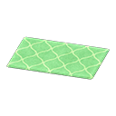
綠色廚房地墊
みどりのキッチンマット
Green kitchen mat
佔地尺寸：2.0 × 1.0（小型 (S)）
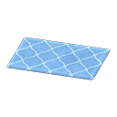
藍色廚房地墊
あおいキッチンマット
Blue kitchen mat
佔地尺寸：2.0 × 1.0（小型 (S)）

活潑媽媽廚房地墊
げんきなははのキッチンマット
Mom's lively kitchen mat
佔地尺寸：2.0 × 1.0（小型 (S)）

調皮媽媽廚房地墊
オチャメなははのキッチンマット
Mom's playful kitchen mat
佔地尺寸：2.0 × 1.0（小型 (S)）

酷感媽媽廚房地墊
クールなははのキッチンマット
Mom's cool kitchen mat
佔地尺寸：2.0 × 1.0（小型 (S)）

可靠媽媽廚房地墊
たよれるははのキッチンマット
Mom's reliable kitchen mat
佔地尺寸：2.0 × 1.0（小型 (S)）
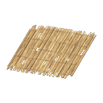
舊草蓆
ふるいむしろのラグ
Shanty mat
佔地尺寸：4.0 × 4.0（大型 (L)）
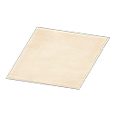
中型白色簡約地墊
しろいシンプルマット・M
White simple medium mat
佔地尺寸：3.0 × 3.0（中型 (M)）
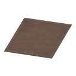
中型茶色簡約地墊
ちゃいろいシンプルマット・M
Simple medium brown mat
佔地尺寸：3.0 × 3.0（中型 (M)）
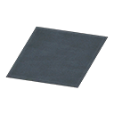
中型黑色簡約地墊
くろいシンプルマット・M
Simple medium black mat
佔地尺寸：3.0 × 3.0（中型 (M)）
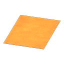
中型橘色簡約地墊
オレンジのシンプルマット・M
Simple medium orange mat
佔地尺寸：3.0 × 3.0（中型 (M)）
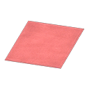
中型紅色簡約地墊
あかいシンプルマット・M
Simple medium red mat
佔地尺寸：3.0 × 3.0（中型 (M)）
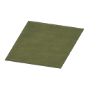
中型卡其色簡約地墊
カーキのシンプルマット・M
Simple medium avocado mat
佔地尺寸：3.0 × 3.0（中型 (M)）
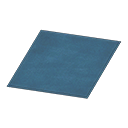
中型藍色簡約地墊
あおいシンプルマット・M
Simple medium blue mat
佔地尺寸：3.0 × 3.0（中型 (M)）
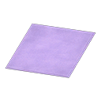
中型紫色簡約地墊
むらさきのシンプルマット・M
Simple medium purple mat
佔地尺寸：3.0 × 3.0（中型 (M)）
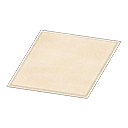
小型白色簡約地墊
しろいシンプルマット・S
White simple small mat
佔地尺寸：2.0 × 2.0（小型 (S)）
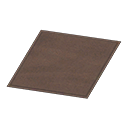
小型茶色簡約地墊
ちゃいろいシンプルマット・S
Simple small brown mat
佔地尺寸：2.0 × 2.0（小型 (S)）
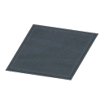
小型黑色簡約地墊
くろいシンプルマット・S
Simple small black mat
佔地尺寸：2.0 × 2.0（小型 (S)）
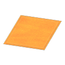
小型橘色簡約地墊
オレンジのシンプルマット・S
Simple small orange mat
佔地尺寸：2.0 × 2.0（小型 (S)）
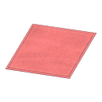
小型紅色簡約地墊
あかいシンプルマット・S
Simple small red mat
佔地尺寸：2.0 × 2.0（小型 (S)）
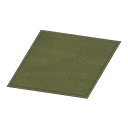
小型卡其色簡約地墊
カーキのシンプルマット・S
Simple small avocado mat
佔地尺寸：2.0 × 2.0（小型 (S)）
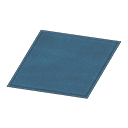
小型藍色簡約地墊
あおいシンプルマット・S
Simple small blue mat
佔地尺寸：2.0 × 2.0（小型 (S)）
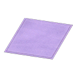
小型紫色簡約地墊
むらさきのシンプルマット・S
Simple small purple mat
佔地尺寸：2.0 × 2.0（小型 (S)）
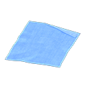
邋遢地毯
だらしないラグ
Sloppy rug
佔地尺寸：4.0 × 4.0（大型 (L)）
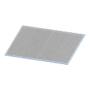
鋁箔地墊
アルミマット
Aluminum rug
佔地尺寸：3.0 × 2.0（中型 (M)）
鈴錢袋地毯
ベルぶくろのラグ
Bell-bag rug
佔地尺寸：3.0 × 3.0（中型 (M)）
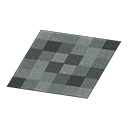
灰階配色磚塊地毯
モノクロブロックのラグ
Black blocks rug
佔地尺寸：3.0 × 3.0（中型 (M)）
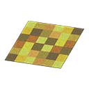
黃色磚塊地毯
きいろブロックのラグ
Yellow blocks rug
佔地尺寸：3.0 × 3.0（中型 (M)）
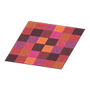
紅色磚塊地毯
あかブロックのラグ
Red blocks rug
佔地尺寸：3.0 × 3.0（中型 (M)）
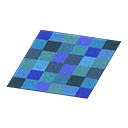
藍色磚塊地毯
あおブロックのラグ
Blue blocks rug
佔地尺寸：3.0 × 3.0（中型 (M)）
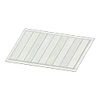
白色木甲板地毯
しろいウッドデッキのラグ
White wooden-deck rug
佔地尺寸：3.0 × 2.0（中型 (M)）
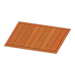
茶色木甲板地毯
ちゃいろいウッドデッキのラグ
Brown wooden-deck rug
佔地尺寸：3.0 × 2.0（中型 (M)）
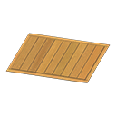
自然色木甲板地毯
ナチュラルなウッドデッキのラグ
Natural wooden-deck rug
佔地尺寸：3.0 × 2.0（中型 (M)）
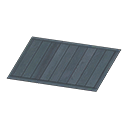
黑色木甲板地毯
くろいウッドデッキのラグ
Black wooden-deck rug
佔地尺寸：3.0 × 2.0（中型 (M)）
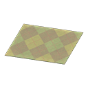
茶色菱格紋地毯
ちゃいろいアーガイルのラグ
Brown argyle rug
佔地尺寸：4.0 × 3.0（大型 (L)）
黃色菱格紋地毯
きいろいアーガイルのラグ
Yellow argyle rug
佔地尺寸：4.0 × 3.0（大型 (L)）
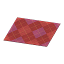
紅色菱格紋地毯
あかいアーガイルのラグ
Red argyle rug
佔地尺寸：4.0 × 3.0（大型 (L)）
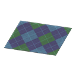
藍色菱格紋地毯
あおいアーガイルのラグ
Blue argyle rug
佔地尺寸：4.0 × 3.0（大型 (L)）
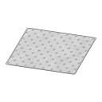
灰階配色點點地墊
モノクロドットのラグ
Monochromatic dotted rug
佔地尺寸：4.0 × 3.0（大型 (L)）
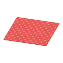
紅色點點地墊
レッドドットのラグ
Red dotted rug
佔地尺寸：4.0 × 3.0（大型 (L)）
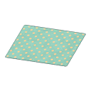
復古點點地毯
レトロドットのラグ
Retro dotted rug
佔地尺寸：4.0 × 3.0（大型 (L)）
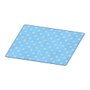
藍色點點地墊
ブルードットのラグ
Blue dotted rug
佔地尺寸：4.0 × 3.0（大型 (L)）
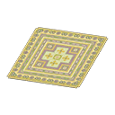
黃色基裡姆地毯
きいろいキリムのカーペット
Yellow kilim-style carpet
佔地尺寸：5.0 × 5.0（大型 (L)）
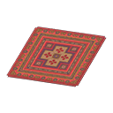
紅色基裡姆地毯
あかいキリムのカーペット
Red kilim-style carpet
佔地尺寸：5.0 × 5.0（大型 (L)）
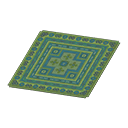
綠色基裡姆地毯
みどりのキリムのカーペット
Green kilim-style carpet
佔地尺寸：5.0 × 5.0（大型 (L)）
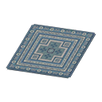
藍色基裡姆地毯
あおいキリムのカーペット
Blue kilim-style carpet
佔地尺寸：5.0 × 5.0（大型 (L)）
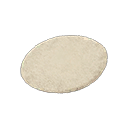
中型象牙色圓地墊
アイボリーのラウンドマット・M
Ivory medium round mat
佔地尺寸：3.0 × 3.0（中型 (M)）
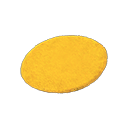
中型黃色圓地墊
きいろいラウンドマット・M
Yellow medium round mat
佔地尺寸：3.0 × 3.0（中型 (M)）
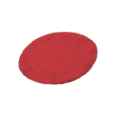
中型紅色圓地墊
あかいラウンドマット・M
Red medium round mat
佔地尺寸：3.0 × 3.0（中型 (M)）
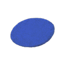
中型藍色圓地墊
あおいラウンドマット・M
Blue medium round mat
佔地尺寸：3.0 × 3.0（中型 (M)）
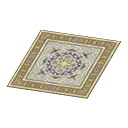
黃色波斯地毯
きいろいペルシャじゅうたん
Yellow Persian rug
佔地尺寸：5.0 × 5.0（大型 (L)）
紅色波斯地毯
あかいペルシャじゅうたん
Red Persian rug
佔地尺寸：5.0 × 5.0（大型 (L)）
藍色波斯地毯
あおいペルシャじゅうたん
Blue Persian rug
佔地尺寸：5.0 × 5.0（大型 (L)）
紫色波斯地毯
むらさきのペルシャじゅうたん
Purple Persian rug
佔地尺寸：5.0 × 5.0（大型 (L)）
茶色長毛地毯
ちゃいろいシャギーなラグ
Brown shaggy rug
佔地尺寸：5.0 × 5.0（大型 (L)）
綠色長毛地毯
みどりのシャギーなラグ
Green shaggy rug
佔地尺寸：5.0 × 5.0（大型 (L)）
藍色長毛地毯
あおいシャギーなラグ
Blue shaggy rug
佔地尺寸：5.0 × 5.0（大型 (L)）
紫色長毛地毯
むらさきのシャギーなラグ
Purple shaggy rug
佔地尺寸：5.0 × 5.0（大型 (L)）
小型象牙色圓地墊
アイボリーのラウンドマット・S
Ivory small round mat
佔地尺寸：2.0 × 2.0（小型 (S)）
小型黃色圓地墊
きいろいラウンドマット・S
Yellow small round mat
佔地尺寸：2.0 × 2.0（小型 (S)）
小型紅色圓地墊
あかいラウンドマット・S
Red small round mat
佔地尺寸：2.0 × 2.0（小型 (S)）
小型藍色圓地墊
あおいラウンドマット・S
Blue small round mat
佔地尺寸：2.0 × 2.0（小型 (S)）
黃色粗橫紋地毯
きいろボーダーのラグ
Yellow stripes rug
佔地尺寸：4.0 × 3.0（大型 (L)）
桃紅色粗橫紋地毯
ももいろボーダーのラグ
Peach stripes rug
佔地尺寸：4.0 × 3.0（大型 (L)）
綠色粗橫紋地毯
みどりボーダーのラグ
Green stripes rug
佔地尺寸：4.0 × 3.0（大型 (L)）
藍色粗橫紋地毯
あおボーダーのラグ
Blue stripes rug
佔地尺寸：4.0 × 3.0（大型 (L)）
黃色塑膠墊
きいろいビニールシート
Yellow vinyl sheet
佔地尺寸：3.0 × 2.0（中型 (M)）
紅色塑膠墊
あかいビニールシート
Red vinyl sheet
佔地尺寸：3.0 × 2.0（中型 (M)）
藍色塑膠墊
あおいビニールシート
Blue vinyl sheet
佔地尺寸：3.0 × 2.0（中型 (M)）
彩色塑膠墊
カラフルなビニールシート
Colorful vinyl sheet
佔地尺寸：3.0 × 2.0（中型 (M)）
灰階配色波浪地毯
モノクロウェーブのラグ
Monochromatic wavy rug
佔地尺寸：4.0 × 3.0（大型 (L)）
紅色波浪地毯
あかいウェーブのラグ
Red wavy rug
佔地尺寸：4.0 × 3.0（大型 (L)）
藍色波浪地毯
あおいウェーブのラグ
Blue wavy rug
佔地尺寸：4.0 × 3.0（大型 (L)）
摩登波浪地毯
モダンなウェーブのラグ
Modern wavy rug
佔地尺寸：4.0 × 3.0（大型 (L)）
白色婚禮地毯
ウェディングなラグ・ホワイト
White wedding rug
佔地尺寸：3.0 × 2.0（中型 (M)）
紅色婚禮地毯
ウェディングなラグ・レッド
Red wedding rug
佔地尺寸：3.0 × 2.0（中型 (M)）
藍色婚禮地毯
ウェディングなラグ・ブルー
Blue wedding rug
佔地尺寸：3.0 × 2.0（中型 (M)）
植物圖案地毯
ボタニカルなラグ
Botanical rug
佔地尺寸：4.0 × 3.0（大型 (L)）
聖誕節地毯
クリスマスなラグ
Festive rug
佔地尺寸：4.0 × 4.0（大型 (L)）
黃色格紋拼布地毯
きいろいチェックキルトのラグ
Yellow checked rug
佔地尺寸：4.0 × 4.0（大型 (L)）
紅藍格紋拼布地毯
あかあおチェックキルトのラグ
Red-and-blue checked rug
佔地尺寸：4.0 × 4.0（大型 (L)）
桃紅色格紋拼布地毯
ももいろチェックキルトのラグ
Peach checked rug
佔地尺寸：4.0 × 4.0（大型 (L)）
綠色格紋拼布地毯
みどりのチェックキルトのラグ
Green checked rug
佔地尺寸：4.0 × 4.0（大型 (L)）
鑄鐵玄關地墊
アイアンなげんかんマット
Iron entrance mat
佔地尺寸：2.0 × 1.0（小型 (S)）
象牙色簡約浴室地墊
アイボリーのシンプルバスマット
Ivory simple bath mat
佔地尺寸：2.0 × 1.0（小型 (S)）
粉紅色簡約浴室地墊
ピンクのシンプルバスマット
Simple pink bath mat
佔地尺寸：2.0 × 1.0（小型 (S)）
綠色簡約浴室地墊
グリーンのシンプルバスマット
Simple green bath mat
佔地尺寸：2.0 × 1.0（小型 (S)）
海軍藍簡約浴室地墊
ネイビーのシンプルバスマット
Simple navy bath mat
佔地尺寸：2.0 × 1.0（小型 (S)）
蕾絲地毯
レースのラグ
Lacy rug
佔地尺寸：3.0 × 3.0（中型 (M)）
Nook Inc.植物圖案地毯
たぬきかいはつのボタニカルラグ
Nook Inc. botanical rug
佔地尺寸：3.0 × 3.0（中型 (M)）
Nook Inc.地毯
たぬきかいはつのラグ
Nook Inc. rug
佔地尺寸：3.0 × 3.0（中型 (M)）
Nook Inc.正方形地毯
たぬきかいはつのスクエアラグ
Nook Inc. silk rug
佔地尺寸：4.0 × 3.0（大型 (L)）
橢圓形玄關地毯
オーバルなげんかんマット
Oval entrance mat
佔地尺寸：2.0 × 1.0（小型 (S)）
海盜地毯
かいぞくのラグ
Pirate rug
佔地尺寸：3.0 × 2.0（中型 (M)）
紅地毯
レッドカーペット
Red carpet
佔地尺寸：3.0 × 2.0（中型 (M)）
硬地墊
ハードマット
Rough rug
佔地尺寸：2.0 × 1.0（小型 (S)）
塑膠刮泥墊
ゴムのどろふきマット
Rubber mud mat
佔地尺寸：2.0 × 1.0（小型 (S)）
貝殼地毯
かいがらのラグ
Shell rug
佔地尺寸：3.0 × 3.0（中型 (M)）
雪花地毯
スノーフレークなラグ
Snowflake rug
佔地尺寸：3.0 × 3.0（中型 (M)）
萬聖節地毯
ハロウィンなラグ
Spooky rug
佔地尺寸：4.0 × 4.0（大型 (L)）
夏天貝殼地毯
なつのかいがらのラグ
Summer-shell rug
佔地尺寸：3.0 × 3.0（中型 (M)）
一張榻榻米
いちじょうのたたみ
Tatami mat
佔地尺寸：3.0 × 2.0（中型 (M)）
南方小島地毯
みなみのしまのラグ
Tropical rug
佔地尺寸：3.0 × 3.0（中型 (M)）
感恩節地毯
サンクスギビングなラグ
Turkey Day rug
佔地尺寸：4.0 × 4.0（大型 (L)）
橡栗地毯
どんぐりのラグ
Acorn rug
佔地尺寸：3.0 × 3.0（中型 (M)）
白色體操墊
しろいたいそうマット
White exercise mat
佔地尺寸：3.0 × 2.0（中型 (M)）
紅色體操墊
あかいたいそうマット
Red exercise mat
佔地尺寸：3.0 × 2.0（中型 (M)）
綠色體操墊
みどりのたいそうマット
Green exercise mat
佔地尺寸：3.0 × 2.0（中型 (M)）
藍色體操墊
あおいたいそうマット
Blue exercise mat
佔地尺寸：3.0 × 2.0（中型 (M)）
黃色夏威夷拼布地毯
きいろいハワイアンキルトのラグ
Yellow Hawaiian quilt rug
佔地尺寸：4.0 × 4.0（大型 (L)）
粉紅色夏威夷拼布地毯
ピンクのハワイアンキルトのラグ
Pink Hawaiian quilt rug
佔地尺寸：4.0 × 4.0（大型 (L)）
綠色夏威夷拼布地毯
みどりのハワイアンキルトのラグ
Green Hawaiian quilt rug
佔地尺寸：4.0 × 4.0（大型 (L)）
藍色夏威夷拼布地毯
あおいハワイアンキルトのラグ
Blue Hawaiian quilt rug
佔地尺寸：4.0 × 4.0（大型 (L)）
棕色皮革地毯
ブラウンのぎゅうがわラグ
Brown cow-print rug
佔地尺寸：3.0 × 2.0（中型 (M)）
淺棕色皮革地毯
ライトブラウンのぎゅうがわラグ
Light-brown cow-print rug
佔地尺寸：3.0 × 2.0（中型 (M)）
椰子地墊
ココナッツマット
Coconut mat
佔地尺寸：2.0 × 1.0（小型 (S)）
白色地磚地毯
ホワイトのフローリングタイル
White square tile
佔地尺寸：2.0 × 2.0（小型 (S)）
淺色地磚地毯
ライトなフローリングタイル
Light square tile
佔地尺寸：2.0 × 2.0（小型 (S)）
自然色地磚地毯
ナチュラルなフローリングタイル
Natural-wood square tile
佔地尺寸：2.0 × 2.0（小型 (S)）
深色地磚地毯
ダークなフローリングタイル
Dark square tile
佔地尺寸：2.0 × 2.0（小型 (S)）
淺色石頭地毯
ライトストーンなラグ
Light stones rug
佔地尺寸：2.0 × 2.0（小型 (S)）
深色石頭地毯
ダークストーンなラグ
Dark stones rug
佔地尺寸：2.0 × 2.0（小型 (S)）
白木色地板鋪巾
ホワイトウッドなフロアシート
White-wood flooring sheet
佔地尺寸：2.0 × 1.0（小型 (S)）
淺木色地板鋪巾
ライトウッドなフロアシート
Light-wood flooring sheet
佔地尺寸：2.0 × 1.0（小型 (S)）
自然木色地板鋪巾
ナチュラルウッドなフロアシート
Natural-wood flooring sheet
佔地尺寸：2.0 × 1.0（小型 (S)）
深木色地板鋪巾
ダークウッドなフロアシート
Dark-wood flooring sheet
佔地尺寸：2.0 × 1.0（小型 (S)）
白木色地磚地墊
ホワイトウッドなフロアタイル
White-wood flooring tile
佔地尺寸：1.0 × 1.0（小型 (S)）
淺木色地磚地墊
ライトウッドなフロアタイル
Light-wood flooring tile
佔地尺寸：1.0 × 1.0（小型 (S)）
自然木色地磚地墊
ナチュラルウッドなフロアタイル
Natural-wood flooring tile
佔地尺寸：1.0 × 1.0（小型 (S)）
深木色地磚地墊
ダークウッドなフロアタイル
Dark-wood flooring tile
佔地尺寸：1.0 × 1.0（小型 (S)）
棕色優雅地毯
ブラウンのエレガントなラグ
Elegant brown rug
佔地尺寸：4.0 × 4.0（大型 (L)）
米色優雅地毯
ベージュのエレガントなラグ
Elegant beige rug
佔地尺寸：4.0 × 4.0（大型 (L)）
黑色優雅地毯
ブラックのエレガントなラグ
Elegant black rug
佔地尺寸：4.0 × 4.0（大型 (L)）
藍色優雅地毯
ブルーのエレガントなラグ
Elegant blue rug
佔地尺寸：4.0 × 4.0（大型 (L)）
冰地磚地墊
こおりのフロアタイル
Frozen floor tiles
佔地尺寸：2.0 × 2.0（小型 (S)）
光蘚地毯
ヒカリゴケのラグ
Glowing-moss rug
佔地尺寸：3.0 × 2.0（中型 (M)）
灰色磚塊地毯
グレーレンガなラグ
Gray brick rug
佔地尺寸：2.0 × 2.0（小型 (S)）
紅色磚塊地毯
あかレンガなラグ
Red brick rug
佔地尺寸：2.0 × 2.0（小型 (S)）
灰色地磚地墊
グレーのフロアタイル
Gray floor tiles
佔地尺寸：2.0 × 2.0（小型 (S)）
紅色中式地墊
あかいチャイナなマット
Red exquisite rug
佔地尺寸：2.0 × 1.0（小型 (S)）
綠色中式地墊
みどりのチャイナなマット
Green exquisite rug
佔地尺寸：2.0 × 1.0（小型 (S)）
中式地毯
ちゅうかなラグ
Imperial rug
佔地尺寸：4.0 × 4.0（大型 (L)）
巧美生活地毯
タクミライフのカーペット
Large Paradise Planning rug
佔地尺寸：4.0 × 4.0（大型 (L)）
光蘚圓形地墊
ヒカリゴケのラウンドマット
Round glowing-moss rug
佔地尺寸：2.0 × 2.0（小型 (S)）
藤蔓圓形地墊
ツルのラウンドラグ
Round vine rug
佔地尺寸：2.0 × 2.0（小型 (S)）
簡約玄關地墊
シンプルなげんかんマット
Simple entrance mat
佔地尺寸：2.0 × 1.0（小型 (S)）
巧美生活小地墊
タクミライフのミニマット
Small Paradise Planning mat
佔地尺寸：2.0 × 1.0（小型 (S)）
舞臺地毯
ステージのラグ
Stage rug
佔地尺寸：3.0 × 3.0（中型 (M)）
樹樁地毯
きりかぶのラグ
Tree-stump rug
佔地尺寸：3.0 × 3.0（中型 (M)）
黃色星星地毯
きいろいおほしさまのラグ
Yellow star rug
佔地尺寸：3.0 × 3.0（中型 (M)）
橘子地毯
オレンジのラグ
Orange rug
佔地尺寸：3.0 × 3.0（中型 (M)）
蘋果地毯
リンゴのラグ
Apple rug
佔地尺寸：3.0 × 3.0（中型 (M)）
櫻桃地毯
さくらんぼのラグ
Cherry rug
佔地尺寸：3.0 × 3.0（中型 (M)）
桃子地毯
モモのラグ
Peach rug
佔地尺寸：3.0 × 3.0（中型 (M)）
梨子地毯
ナシのラグ
Pear rug
佔地尺寸：3.0 × 3.0（中型 (M)）
復活節地毯
イースターなラグ
Bunny Day rug
佔地尺寸：3.0 × 3.0（中型 (M)）
地球地毯
ちきゅうのラグ
Earth rug
佔地尺寸：3.0 × 3.0（中型 (M)）
魚兒地毯
おサカナのラグ
Fish rug
佔地尺寸：3.0 × 3.0（中型 (M)）
雲朵地毯
もくもくのラグ
Fluffy rug
佔地尺寸：3.0 × 3.0（中型 (M)）
美式足球地毯
アメフトのラグ
Football rug
佔地尺寸：3.0 × 3.0（中型 (M)）
瓢蟲地毯
テントウムシのラグ
Ladybug rug
佔地尺寸：3.0 × 3.0（中型 (M)）

球蓋姆的雲地毯
ジュゲムのくものラグ
Lakitu's Cloud rug
佔地尺寸：3.0 × 3.0（中型 (M)）
人魚地毯
マーメイドなラグ
Mermaid rug
佔地尺寸：3.0 × 3.0（中型 (M)）
蘑菇地毯
キノコのラグ
Mush rug
佔地尺寸：3.0 × 3.0（中型 (M)）
白色愛心地毯
ホワイトハートのラグ
White heart rug
佔地尺寸：3.0 × 3.0（中型 (M)）
粉紅色愛心地毯
ピンクハートのラグ
Pink heart rug
佔地尺寸：3.0 × 3.0（中型 (M)）
藍色愛心地毯
ブルーハートのラグ
Turquoise heart rug
佔地尺寸：3.0 × 3.0（中型 (M)）
紫色愛心地毯
パープルハートのラグ
Purple heart rug
佔地尺寸：3.0 × 3.0（中型 (M)）
白色玫瑰地毯
ホワイトローズのラグ
White rose rug
佔地尺寸：3.0 × 3.0（中型 (M)）
黃色玫瑰地毯
イエローローズのラグ
Yellow rose rug
佔地尺寸：3.0 × 3.0（中型 (M)）
粉紅色玫瑰地毯
ピンクローズのラグ
Pink rose rug
佔地尺寸：3.0 × 3.0（中型 (M)）
紅色玫瑰地毯
レッドローズのラグ
Red rose rug
佔地尺寸：3.0 × 3.0（中型 (M)）
三葉草地毯
シャムロックのラグ
Shamrock rug
佔地尺寸：3.0 × 3.0（中型 (M)）
向日葵地毯
ひまわりのラグ
Sunflower rug
佔地尺寸：3.0 × 3.0（中型 (M)）

耀西蛋地毯
ヨッシーのタマゴのラグ
Yoshi's Egg rug
佔地尺寸：3.0 × 3.0（中型 (M)）
骨頭玄關地毯
ボーンなげんかんマット
Bone entrance mat
佔地尺寸：2.0 × 1.0（小型 (S)）
櫻花地毯
さくらのラグ
Cherry-blossom rug
佔地尺寸：3.0 × 3.0（中型 (M)）
餅乾地毯
ビスケットのラグ
Cookie rug
佔地尺寸：3.0 × 3.0（中型 (M)）
楓葉地毯
もみじのラグ
Maple-leaf rug
佔地尺寸：3.0 × 3.0（中型 (M)）
唱片地毯
レコードのラグ
Record rug
佔地尺寸：3.0 × 3.0（中型 (M)）
黃色西瓜地毯
きいろいスイカのラグ
Yellow watermelon rug
佔地尺寸：3.0 × 3.0（中型 (M)）
紅色西瓜地毯
あかいスイカのラグ
Red watermelon rug
佔地尺寸：3.0 × 3.0（中型 (M)）
骷髏地毯
スカルのラグ
Skull rug
佔地尺寸：3.0 × 3.0（中型 (M)）
白色訊息地墊
しろいメッセージマット
White message mat
佔地尺寸：2.0 × 1.0（小型 (S)）
黃色訊息地墊
きいろいメッセージマット
Yellow message mat
佔地尺寸：2.0 × 1.0（小型 (S)）
紅色訊息地墊
あかいメッセージマット
Red message mat
佔地尺寸：2.0 × 1.0（小型 (S)）
藍色訊息地墊
あおいメッセージマット
Blue message mat
佔地尺寸：2.0 × 1.0（小型 (S)）
淺色竹地毯
ライトなバンブーラグ
Light bamboo rug
佔地尺寸：3.0 × 2.0（中型 (M)）
深色竹地毯
ダークなバンブーラグ
Dark bamboo rug
佔地尺寸：3.0 × 2.0（中型 (M)）
化石地毯
かせきのラグ
Fossil rug
佔地尺寸：3.0 × 3.0（中型 (M)）
魔法陣地毯
まほうじんのラグ
Magic-circle rug
佔地尺寸：3.0 × 3.0（中型 (M)）
月之地毯
つきのラグ
Moon rug
佔地尺寸：3.0 × 3.0（中型 (M)）
淺色竹子浴室地墊
ライトなバンブーバスマット
Light bamboo bath mat
佔地尺寸：2.0 × 1.0（小型 (S)）
深色竹子浴室地墊
ダークなバンブーバスマット
Dark bamboo bath mat
佔地尺寸：2.0 × 1.0（小型 (S)）
黃色竹子鋪墊
きいろいたけのしきもの
Yellow bamboo mat
佔地尺寸：2.0 × 1.0（小型 (S)）
綠色竹子鋪墊
みどりのたけのしきもの
Green bamboo mat
佔地尺寸：2.0 × 1.0（小型 (S)）
星空地毯
ほしぞらのラグ
Starry-skies rug
佔地尺寸：3.0 × 3.0（中型 (M)）
Cinnamoroll地毯
シナモロールなラグ
Cinnamoroll rug
佔地尺寸：3.0 × 3.0（中型 (M)）
Hello Kitty地毯
ハローキティなラグ
Hello Kitty rug
佔地尺寸：3.0 × 3.0（中型 (M)）
My Melody地毯
マイメロディなラグ
My Melody rug
佔地尺寸：3.0 × 3.0（中型 (M)）
Kerokerokeroppi地毯
けろけろけろっぴなラグ
Kerokerokeroppi rug
佔地尺寸：3.0 × 3.0（中型 (M)）
Pompompurin地毯
ポムポムプリンなラグ
Pompompurin rug
佔地尺寸：3.0 × 3.0（中型 (M)）
Kiki & Lala地毯
キキ&ララなラグ
Kiki & Lala rug
佔地尺寸：3.0 × 3.0（中型 (M)）
LEGO®太空任務地毯
LEGO®スペースミッションラグ
LEGO® space logo rug
佔地尺寸：3.0 × 2.0（中型 (M)）